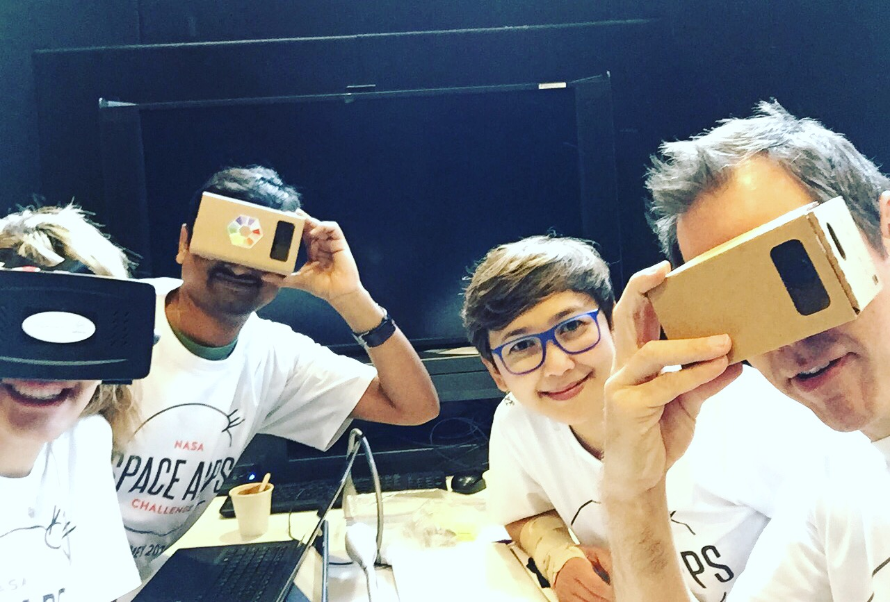
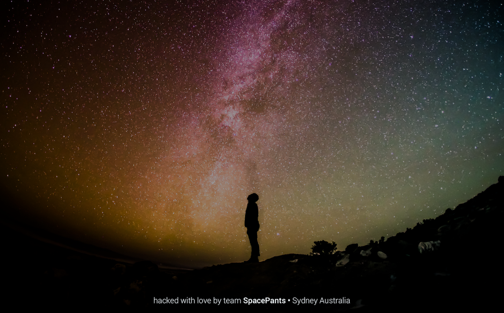
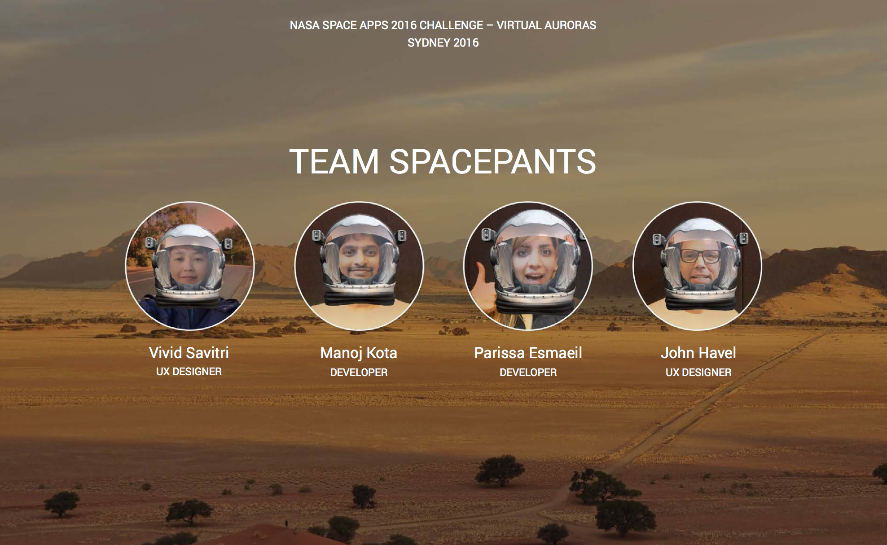

Spacetrek VR App - Winner of NASA SpaceApps Challenge 2016 in Australiaachievements
- 1st winner in Sydney, Australia
- Top 5 Global Finalist in Most Inspirational Category (beating over 1200 projects around the world)
background in brief
I liked doing hackathon every now and then. And I've done it enough to learn that the best way to optimise your hack is to participate with friends. Form your team ahead of time so you don't have to deal with the awkwardness of making small talk with a bunch of strangers while trying to solve a problem at the same time. That strategy is for noobies. We're here to win, yo!
So my friends and I decided to participate in NASA SpaceApps Challenge in last minute back in April 2016. Hoping to have fun (and hopefully, win!) whilst learning how to design and develop VR apps. By the way, none of us had any prior experience designing VR apps.
We literally spend few days prior to the hackathon doing a lot of reading and learning everything we can about designing and developing for VR. As a designer myself, it was very invigorating to be able to flex my design muscle and get my hands dirty. One of the biggest challenges for me was to figure out the best way to design for an experience in which there's no screen. Little did I know that only tiny part of the traditional User Interface design approach would work. The rest was spent trial and error and try again.
what we did
We created an open source, immersive Virtual Reality (VR) educational game that lets users journey, explore and experience the earth, ISS, Mars and beyond. The game follows a simple quiz-based play
with dynamic content and is deployed as a web application which is playable on a mobile phone and Google Cardboard.
Our vision is to reduce barriers and make outer space accessible for all (including persons with physical disability) – educating and inspiring the next generations of engineers and scientists to be the next innovators of the future.
problems we tried to solve
- Unequal access to education and opportunity due to physical disability, social circumstances or affordability
- Rigid educational system that makes learning difficult and disengaging
our solutions
- Making outer space, adventures or any realities accessible to all regardless of physical abilities or social circumstances
- Democratise access to knowledge and disrupt learning experience
how
By creating an open source and immersive VR educational application that engage users through interactivity and play
unique value propositions
- Immersive - it lets you experience any adventure firsthand immersively, from rocket launch to Mars exploration to the inside of the ISS to deep sea diving
- Interactive - it combines learning and playing through simple quiz-based games that require minimal effort to interact. All data/content are dynamically added so any users can customise it to suit any educational purpose
- Affordable - Spacetrek is intentionally deployed as VR web app playable on Google Cardboard to minimise barrier to entry of expensive VR equipment
- Scalable framework - We utilise scalable web VR framework (Mozilla A-Frame) that allows deployment across web browser run on iOS and Android mobile platform
- Dynamic content - Various content (imagery, videos, quizzes) can be edited dynamically via Content Management System (CMS) – in this MVP only the quiz games are dynamically loaded - questions are randomised to minimise repetition
check out the demo prototype
http://spacepants.azurewebsites.net - You can view our prototype on any smartphone browser using basic VR viewer like Google Cardboard, although it also works on Oculus and Samsung Gear VR.

more info about the hackathon
tools we used
Mozilla A-Frame, HTML 5, jQuery, Sketch 3, and Avocode
. . . . .
#NASA, #SpaceApps, #Hackathon, #VR, #Games, #Australia #Sydney #Prototype
. . . . .